Grief is Welcome Here: An Exploration of Grief Through Music and Art
How can we more intentionally welcome, make space for, and respond to grief?
Music Socials
In hospice, residents are cared for by an amazing team who tend to their physical and psychosocial needs. As allied health professionals, we often encounter residents and families navigating not only the realities of illness and dying, but also the isolation that can accompany them.
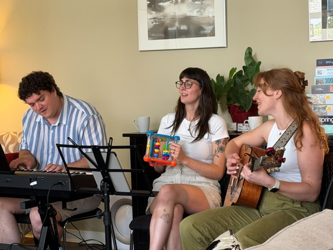
We wanted to create a space for residents and families to connect through music—without pressure to share, simply to be together. This is where our Music Socials were born.
Held monthly, these gatherings bring residents, families, visitors, and staff together through live music, conversation, and shared experience. Socials can be filled with laughter, joyful singing, tears, and even new friendships among residents and visitors. No two gatherings are the same, but in each one, music opens a space for connection and healing.
These socials also create opportunities for allied health professionals to work together and provide holistic support to our clients. And when a resident can no longer come to the social, we bring the music to them.
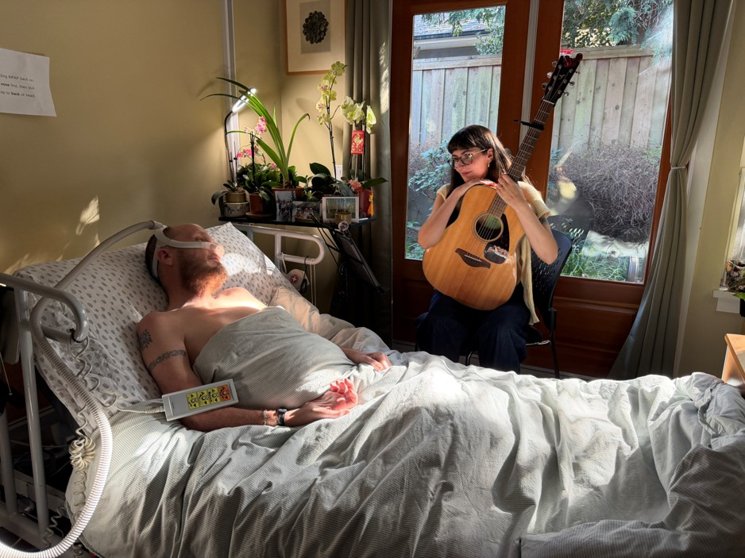
One of our residents, Andy, was an artist, a musician, and a deeply creative human. In his final days, he would say, “To create is to be alive.” He no longer had the capacity to leave his bed and join the socials, so bedside music sessions became a lifeline for him.
Wanting to bring the spirit of sharing the beauty of music with others into his room, we arranged, at two different stages in his stay, for two different singer-songwriters to come and play music with him at his bedside. These sessions carried the spirit of the socials into his room. Live music created an opportunity for connection, conversation, and shared experience, while inviting a range of emotions to move more freely. There was space for sadness and tenderness alongside beauty, joy, and moments of simply being present together.
Andy felt seen in these music experiences and, most importantly, felt so alive and present until he was ready to die.
Hear more of what Andy wanted to share about his experience with music in his final days.
Grief Support Group
At the Vancouver Hospice Society (VHS), we became more aware of a bridge that was missing in ongoing support. We encourage those accessing our bereavement services to foster connections with the other grievers they have met, draw on support in their own communities, and build opportunities to kindle further connections. We are also very aware that this can require more work and energy at a time when grief is at the forefront, reserves are low, and the tendency more than ever is to retreat and return to familiar patterns.
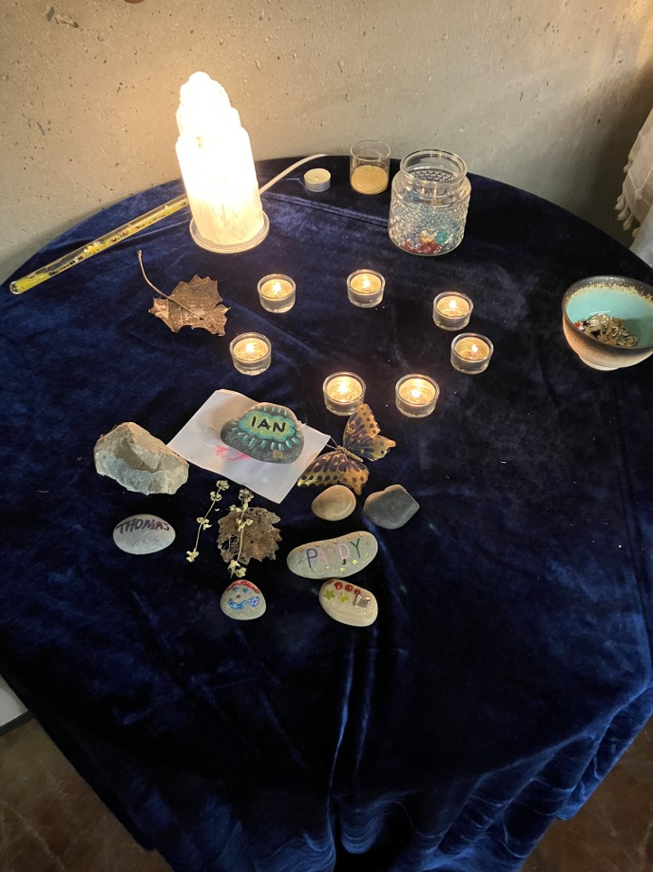
An intention we set at VHS was to cultivate ways of building community connections and a sense of belonging through grief. We opted to germinate multi-generational gatherings within our family grief group offering, and growing a living environment of inclusivity. It allowed for the automatic recognition that when we experience death, we are impacted not only as individuals, but as a family unit, with those impacts rippling out to extended family and community.
Through art creation and music making, families were guided to create a collective song. Words and images from our community mural, built over the course of each week, became the initial seeds of inspiration as our music therapist began shaping two verses and a chorus. As the group’s imagery, phrases, and sharings came together as lyrics, the experience was unmistakable—grief, love, and connection, all held within a single song. While a few participants had prior musical experience, most were hesitant to engage at first. Unsurprisingly, the children were quicker to join in. Over the weeks, each group member, both adults and youth, found opportunities to express their emotions through music and art.
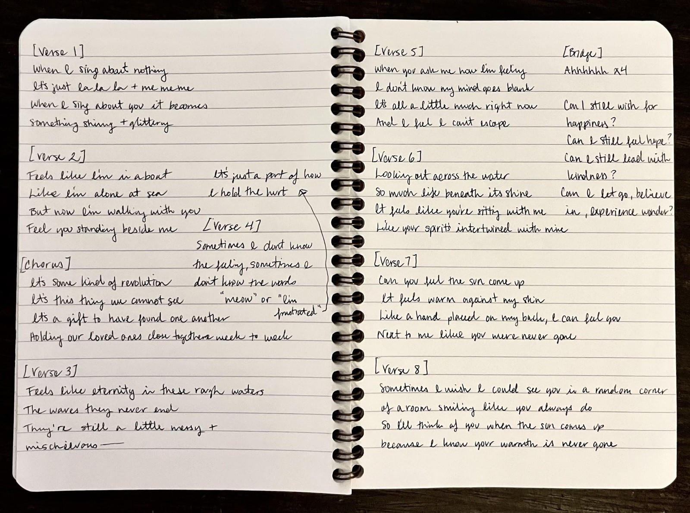
A part of our group experience was to create a collective art piece built from nature. Our group had a theme of the ocean, and we built a boat out of clay as a starting point. The group focused on making sure the boat had a sail and items for travel through the unexpected waters all around. As meaningful songs, previously requested by our group members, played in the background, families wept, shared memories, and created something powerful together—the beauty that can emerge in healing.
Music and art remind us that even in our brokenness, we can build something beautiful—something whole, in a different way.
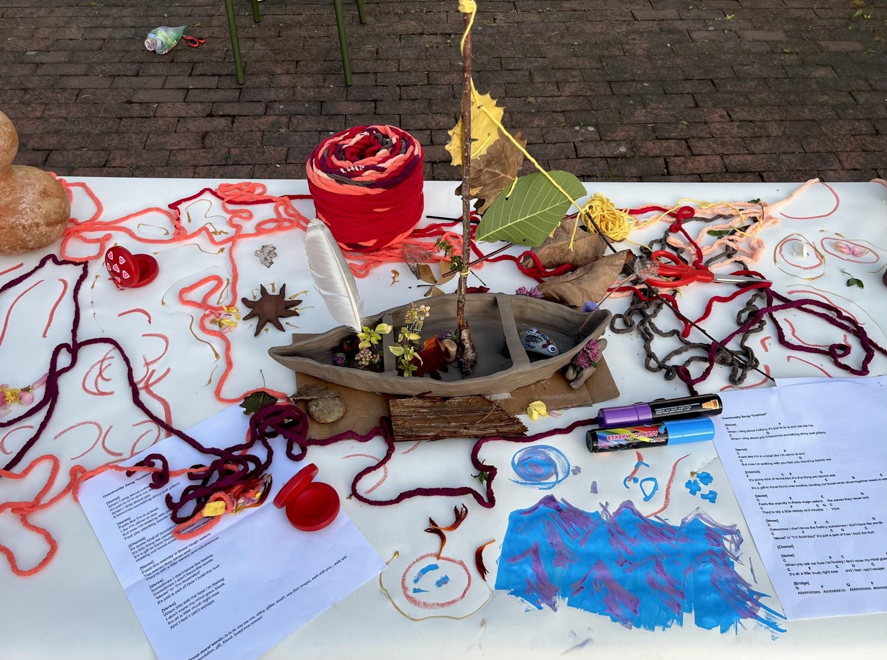
We dedicated our last gathering as a group to a meal. It is an honouring of what it means to gather, to connect, and to celebrate the community that has been built over the weeks together. Our last group this spring involved creating a grief café together, where everyone was invited to share something with the group: a song, a poem, art, or a story. We shared a beautiful meal, question prompts for sharing, and the gratitude of each other. It was a symphony and an expression of what it means to come together intentionally and grow together.
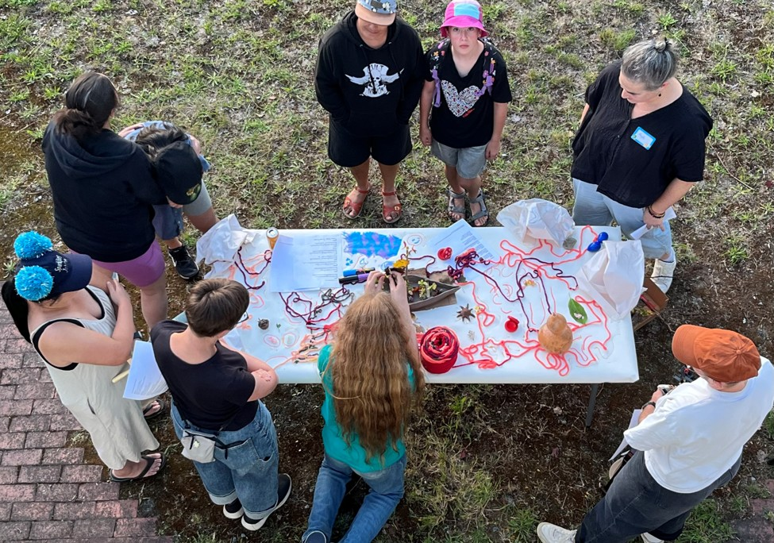
It can always be a stumbling block to support the needs of the individual, yet when we can remember the whole, there tends to be a space at the table for everyone.
Public Grief Events
Over time, we’ve seen how vital community is to the healing process. By widening the circle through open, co-created experiences, we allow grief to coexist with life and connection. Extending this support beyond individuals and families to the broader community has helped build networks of trust and shared understanding.
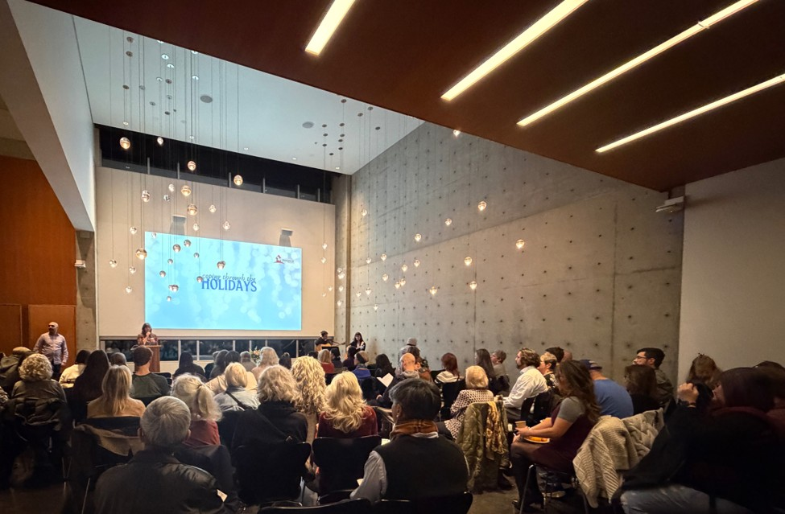
We’ve introduced several public events, including the Spring Gathering for Grief, Coping Through the Holidays, and The Weight We Carry.
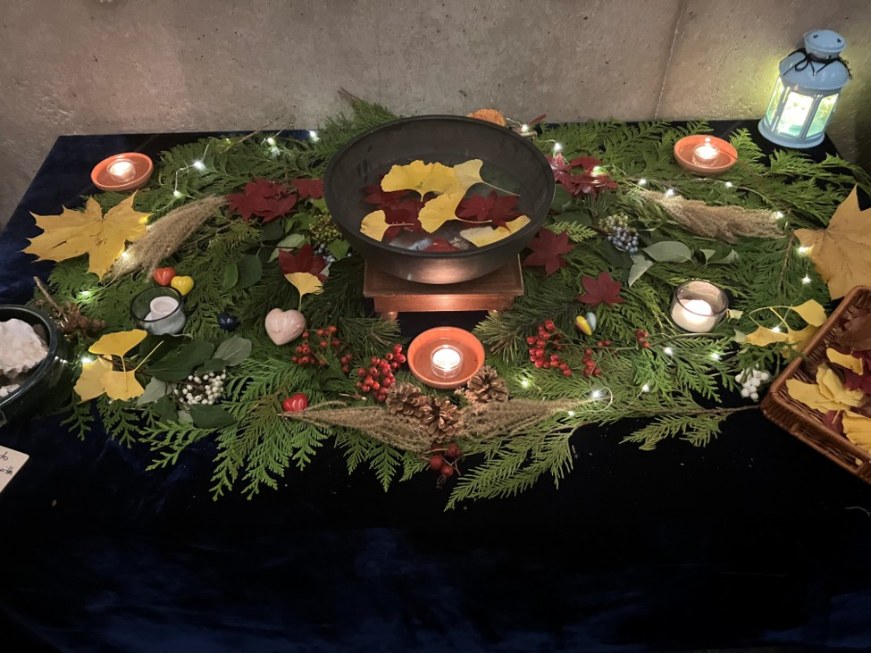
Coping Through the Holidays began as a way to support people during a season when loss feels especially present. It’s now a cherished candlelit event filled with music, reflection, and community—where grief is openly invited to the table.
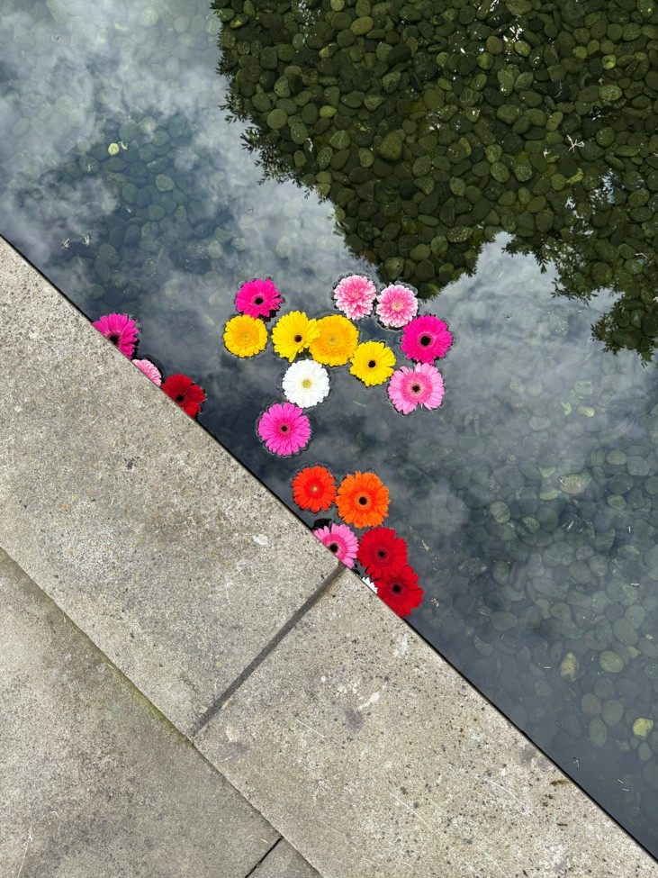
Our Spring Gathering for Grief responds to another reality: renewal can be painful when grief is still raw. This ritual-based event invites participants to move through stations—creating art, writing letters, listening to music, and closing with a flower release into the pond. Each person shapes their own healing path.
The Weight We Carry was born out of whisperings throughout our hospice and among other healthcare professionals. There often isn’t time to slow down and acknowledge the pain, suffering, and loss that has taken place around us, both in and out of work. As professionals, there can be an expectation that we are so skilled in this area that we don’t need a space to feel what comes up and process what we have been carrying.
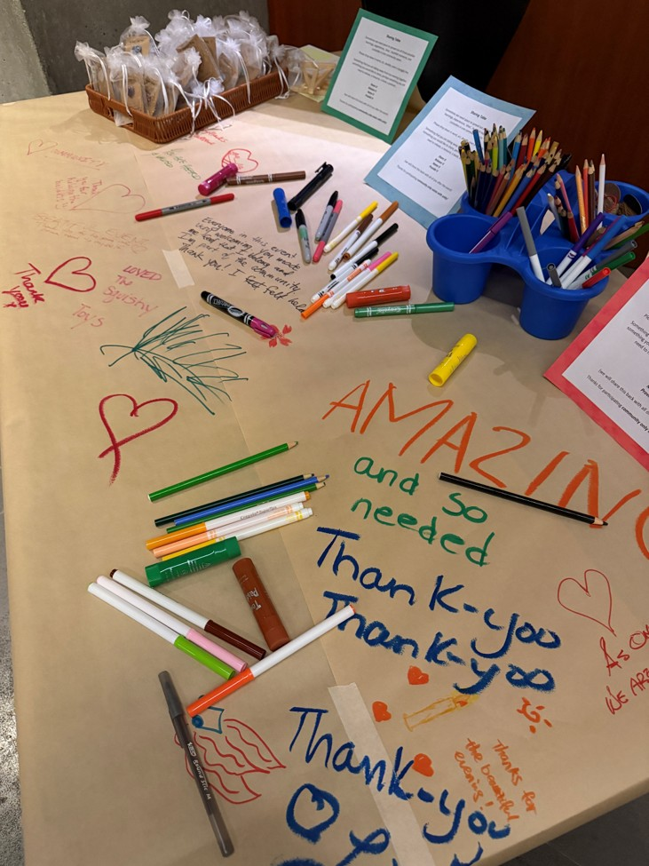
This adapted grief event led to a connection with a local secondary school that had experienced a tragedy in the community a year prior. We were invited to offer a similar experience for staff on their professional development day. It was a meaningful invitation to slow down, create art, feel the music, and talk with one another.
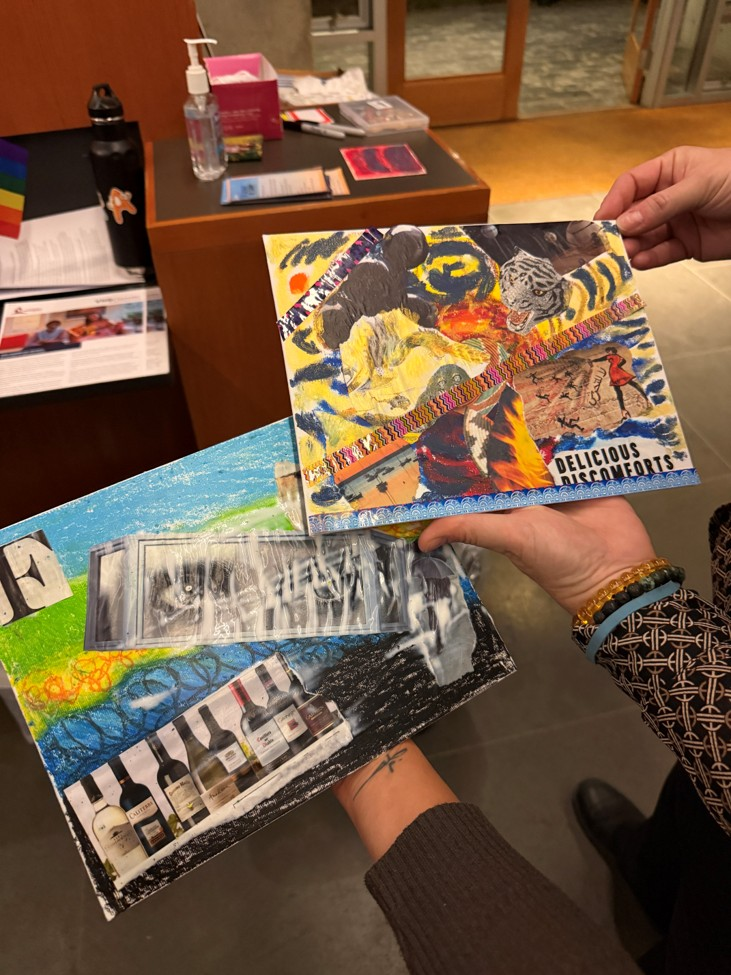
We’re continually inspired to create spaces of connection—for young widows, grieving parents, seniors learning to live alone after decades with a partner, healthcare professionals, and communities experiencing loss. Our hope is that others feel inspired to do the same: to build spaces where grief is seen, shared, and held.
We often work through words—but expressive arts remind us that healing also happens beyond them. Through art and music, we touch what can’t always be spoken, especially in life’s most sacred and tender moments.
If you would like to participate in a grounding experience, one we offered at The Weight We Carry, please view and listen to the following offering.
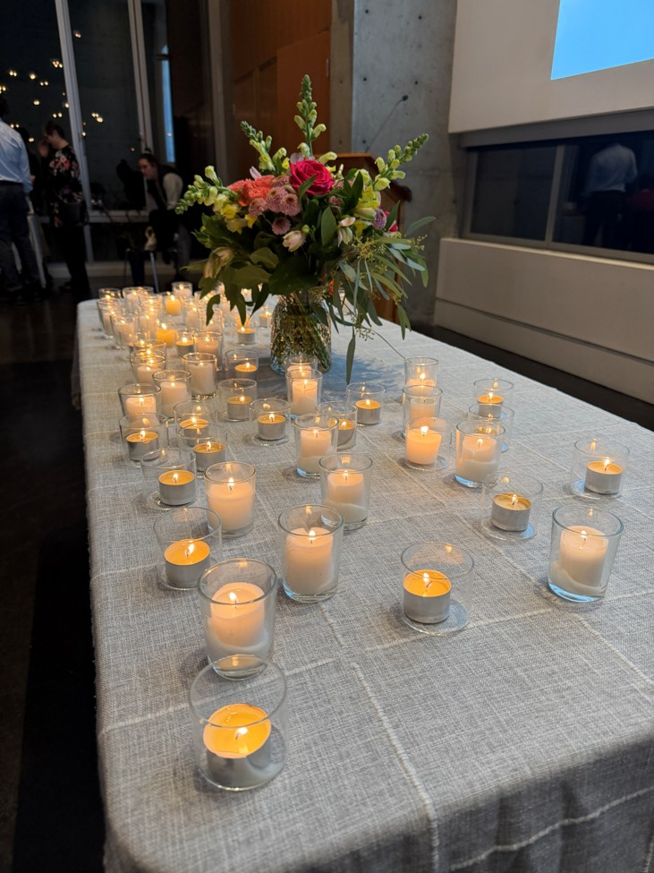